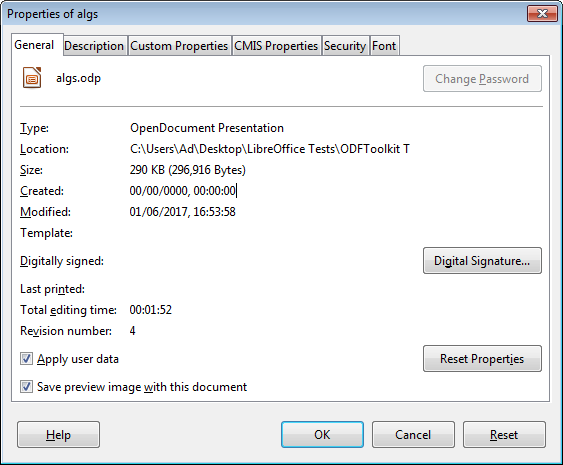
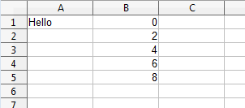

Chapter 51. Simple ODF
Topics
The OpenDocument Format; Doc Information; Unzipping an ODF Doc; the Simple Java API for ODF (Apache ODF Toolkit): making docs (text, sheet, and slides), slide movement, doc concatenation (text, sheet, and slides)
Example folders: "ODFToolkit Tests" and "Utils"
An OpenDocument Format (ODF) document is a zipped folder containing an assortment of XML files, images, and other resources. This makes it possible to manipulate using zip/unzip and XML features, but that isn't a good idea due to the complexity of the formats. This chapter looks at a few of these lower-level techniques, but is mainly about the Simple API for ODF, a sub-project of the Apache ODF Toolkit (http://incubator.apache.org/odftoolkit/simple/). It's a small Java API for creating, modifying and extracting data from ODF documents, built on top of the ODFDOM library (http://incubator.apache.org/odftoolkit/odfdom/). Rather surprisingly, its support for the concatenation of documents is better than that in the Office API.
1. The OpenDocument Format
The contents of an ODF document (i.e. the zipped folder) depend on its type (e.g.
does it contain a spreadsheet, presentation, or text?), but several files always appear inside the folder:
- content.xml: the document's textual contents, but not binary data such as images;
- meta.xml: the document's meta information, such as the author's name and the last modification date. The data is most easily viewed through Office's File > Properties menu item;
- styles.xml: the styles used for the document's pages, paragraphs, text formats, and others, which are usually set via the Styles and Formatting dialogs in Office;
- settings.xml: information specific to the application and document's display, such as the window's size/position, printer settings, and whether headers and footers are visible;
- manifest.xml: this lists the content of the zipped folder, and is stored in the META-INF/ subdirectory;
- mimetype: a one-line file listing the document's MIME-type.
The easiest way of viewing these files and folders is to unzip the ODF file using a utility such as 7-Zip, as in Figure 1.

Figure 1. An Unzipped View of algs.odp.
Figure 1's Configurations2/ folder stores localization information for the Office GUI; Pictures/ stores the images used in the document; Thumbnails/ holds a small 128x128 picture of the document in thumbnail.png.
The wikipedia page about ODF is quite informative (https://en.wikipedia.org/wiki/OpenDocument), as is its entry for the OpenDocument technical specification (https://en.wikipedia.org/wiki/OpenDocument_technical_specification). There's a quick summary of the OpenDocument Format (ODF) at https://help.libreoffice.org/Common/XML_File_Formats.
The ODF standard was developed by the Organization for the Advancement of Structured Information Standards (OASIS) consortium (https://www.oasis- open.org/), whose website hosts a lot of information. A related community site is http://opendocument.xml.org/
The most complete textbook on ODF is:
OASIS OpenDocument Essentials J. David Eisenberg, 2005 http:// books.evc-cit.info/ The associated website has a free draft of the book, and all the examples and support code. The site often seems to be offline, but the book can be found at other locations.
A recent version can be purchased at Lulu: http://www.lulu.com/shop/j-david- eisenberg/oasis-opendocument-essentials/paperback/product-392512.html
2. Document Information
There's little need to directly manipulate a document's XML files since the Office API offers high-level techniques for accessing most of their information.
For example, part of meta.xml for algs.odp is:
<office:meta>
<dc:title>PowerPoint Presentation</dc:title>
<dc:date>2017-01-06T16:53:58.639000000</dc:date>
<meta:editing-cycles>4</meta:editing-cycles>
<meta:editing-duration>PT1M52S</meta:editing-duration>
<meta:generator>LibreOffice/5.1.0.3$
Windows_x86LibreOffice_project/
5e3e00a007d9b3b6efb6797a8b8e57b51ab1f737</meta:generator>
<meta:document-statistic meta:object-count="92"/>
<meta:user-defined meta:name="Secret">Made in
Thailand</meta:user-defined>
</office:meta>
This data is displayed in the General tab of the File, Properties window in Figure 2.

Figure 2. File, Properties Window.
Rather than attempting to extract and parse meta.xml, this information is reachable through the XDocumentProperties interface which I described back in Chapter 3, section 2.
The following DocInfo.java example uses Info.printDocProperties() to print document details:
// in DocInfo.java
public class DocInfo
{
public static void main(String args[])
{
if (args.length < 1) {
System.out.println("Usage: run DocInfo <fnm>");
return;
}
XComponentLoader loader = Lo.loadOffice();
XComponent doc = Lo.openDoc(args[0], loader);
if (doc == null) {
System.out.println("Could not open " + args[0]);
Lo.closeOffice();
return;
}
System.out.println();
Props.showObjProps("Document", doc);
Info.printDocProperties(doc);
Lo.closeDoc(doc);
Lo.closeOffice();
} // end of main()
} // end of DocInfo class
When DocInfo is passed algs.odp, some of the output is:
Document Properties Info
Author:
Title: PowerPoint Presentation
Subject:
Description:
Generator: LibreOffice/5.1.0.3$Windows_x86 LibreOffice_project/
5e3e00a007d9b3b6efb6797a8b8e57b51ab1f737
:
Modification Date: Jan 06, 2017 16:53
:
Secret == Made in Thailand
Info.printDocProperties() calls many XDocumentProperties.getXXX() methods to obtain these details:
// in the Info class
public static void printDocProperties(Object doc)
{
XDocumentPropertiesSupplier docPropsSupp =
Lo.qi(XDocumentPropertiesSupplier.class, doc);
XDocumentProperties dps = docPropsSupp.getDocumentProperties();
printDocProps(dps);
XPropertyContainer udProps = dps.getUserDefinedProperties();
Props.showObjProps("UserDefined Info", udProps);
} // end of printDocProperties()
public static void printDocProps(XDocumentProperties dps)
{
System.out.println("Document Properties Info");
System.out.println(" Author: " + dps.getAuthor());
System.out.println(" Title: " + dps.getTitle());
System.out.println(" Subject: " + dps.getSubject());
: // many more prints
} // end of printDocProps()
XDocumentProperties replaces the deprecated XDocumentInfo interface, which has been removed from LibreOffice (although it's still in OpenOffice). The two classes manipulate almost the same information, but the older XDocumentInfo can retrieve the document's MIME-type, which is absent from XDocumentProperties. One way of obtaining this would be to access the mimetype file zipped inside the document, as shown next.
3. Unzipping an ODF Document
My DocUnzip.java example shows how it's possible to list the zipped contents of a document, access its MIME-type, and extract a zipped file:
// in DocUnzip.java
public class DocUnzip
{
public static void main(String args[])
{
if ((args.length < 1) || (args.length > 2)) {
System.out.println("Usage: run DocUnzip <fnm> [<ExtractFnm>]");
return;
}
XComponentLoader loader = Lo.loadOffice();
FileIO.zipList(args[0]);
// FileIO.zipListUno(args[0]); // only names listed
// get zip access to the document
XZipFileAccess zfa = FileIO.zipAccess(args[0]);
String mimeType = FileIO.getMimeType(zfa);
System.out.println("MIME type: " + mimeType);
System.out.println("Other MIME type approach: " +
Info.getMIMEType(args[0]));
// convert MIME-type too other forms
int docType = Info.mimeDocType(mimeType);
System.out.println("Doc Type: " + docType + "; " +
Lo.docTypeStr(docType));
if (args.length == 2) // extract the named file
FileIO.unzipFile(zfa, args[1]);
Lo.closeOffice();
} // end of main()
} // end of DocUnzip class
The program can be called like so:
run DocUnzip algs.odp content.xml
content.xml will be unzipped from algs.odp and saved as contentCopy.xml in the local directory.
The rest of the output is:
Listing of algs.odp:
Raw Size Size Date Time Name
-------- ------- ------- ------- --------
47 47 Jan 6, 2017 9:54:00 AM mimetype
0 0 Jan 6, 2017 9:54:00 AM Configurations2/popupmenu/
0 0 Jan 6, 2017 9:54:00 AM Configurations2/floater/
0 0 Jan 6, 2017 9:54:00 AM Configurations2/images/Bitmaps/
0 2 Jan 6, 2017 9:54:00 AM
Configurations2/accelerator/current.xml
0 0 Jan 6, 2017 9:54:00 AM Configurations2/menubar/
0 0 Jan 6, 2017 9:54:00 AM Configurations2/progressbar/
0 0 Jan 6, 2017 9:54:00 AM Configurations2/toolbar/
0 0 Jan 6, 2017 9:54:00 AM Configurations2/statusbar/
0 0 Jan 6, 2017 9:54:00 AM Configurations2/toolpanel/
83608 6501 Jan 6, 2017 9:54:00 AM styles.xml
4364 4364 Jan 6, 2017 9:54:00 AM
Pictures/100000000000004600000035E6F1CB2181A9ACF1.png
16977 16977 Jan 6, 2017 9:54:00 AM
Pictures/10000000000003080000002A0A348B9039C3652D.png
20480 20480 Jan 6, 2017 9:54:00 AM
Pictures/10000000000001F4000001F4E2E69E1D.jpg
45056 45056 Jan 6, 2017 9:54:00 AM
Pictures/10000000000000C8000000EEB0A3D2D2.jpg
8192 8192 Jan 6, 2017 9:54:00 AM
Pictures/10000000000000E1000000E1B343DD04.jpg
40960 40960 Jan 6, 2017 9:54:00 AM
Pictures/10000000000000E60000015E784CAA37.jpg
69632 69632 Jan 6, 2017 9:54:00 AM
Pictures/10000000000000DC000000FF9A43DBBF.jpg
28672 28672 Jan 6, 2017 9:54:00 AM
Pictures/100000000000011800000160792BAA16.jpg
12288 12288 Jan 6, 2017 9:54:00 AM
Pictures/10000000000000DC0000014B7CFE8C49.jpg
11901 11901 Jan 6, 2017 9:54:00 AM
Pictures/10000000000000BC0000010DD7ECB1F7.jpg
18238 18238 Jan 6, 2017 9:54:02 AM Thumbnails/thumbnail.png
86313 8040 Jan 6, 2017 9:54:02 AM content.xml
6037 913 Jan 6, 2017 9:54:02 AM settings.xml
1141 491 Jan 6, 2017 9:54:02 AM meta.xml
2248 452 Jan 6, 2017 9:54:02 AM META-INF/manifest.xml
MIME type: application/vnd.oasis.opendocument.presentation
Other MIME type approach: application/vnd.oasis.opendocument.presentation
Doc Type: 5; simpress
Extracting content.xml
Saving to contentCopy.xml
Most of the output is a detailed listing of the zipped contents of algs.odp.
3.1. Listing the Contents of a Zipped Folder
There are two "zipList" functions in the FileIO utility class. FileIO.zipListUno() is simpler since only file and folder names are printed:
// in the FileIO class
public static void zipListUno(String fnm)
{
XZipFileAccess zfa = zipAccess(fnm);
XNameAccess nmAccess = Lo.qi(XNameAccess.class, zfa);
String[] names = nmAccess.getElementNames();
System.out.println("\nZipped Contents of " + fnm);
Lo.printNames(names, 1);
} // end of zipListUno()
public static XZipFileAccess zipAccess(String fnm)
// get zip access to the document using Office API
{
return Lo.createInstanceMCF(XZipFileAccess.class,
"com.sun.star.packages.zip.ZipFileAccess",
new Object[]{ fnmToURL(fnm) });
}
XZipFileAccess is created by instantiating the ZipFileAccess service with the document's filename. The interface is cast to XNameAccess which allows the names of the zipped files to be retrieved as an array of strings. Figure 3 shows the relationships between the service and interfaces.

Figure 3. The ZipFileAccess Service.
The ZipFileAccess service and interfaces are in the com.sun.star.packages.zip module, which includes a ZipEntry class for holding information about each zipped file (e.g. its compressed size). I was unable to find a way of creating ZipEntry objects, but Java contains a complete zip API. By using Java rather than Office, I was able to implement a more fancy "zipList":
// in the FileIO class
public static void zipList(String fnm)
// using the Java API
{
DateFormat df= DateFormat.getDateInstance(); // date format
DateFormat tf= DateFormat.getTimeInstance(); // time format
tf.setTimeZone( TimeZone.getDefault() );
try {
ZipFile zfile = new ZipFile(fnm);
System.out.println("Listing of " + zfile.getName() + ":");
System.out.println("Raw Size Size Date Time Name");
System.out.println("--- ---- ---- ---- ---- ----");
Enumeration<? extends java.util.zip.ZipEntry> zfs =
zfile.entries();
while (zfs.hasMoreElements()) {
java.util.zip.ZipEntry entry =
(java.util.zip.ZipEntry) zfs.nextElement();
Date d = new Date(entry.getTime());
System.out.print( padSpaces(entry.getSize(), 9) + " ");
System.out.print( padSpaces(entry.getCompressedSize(),7)+ " ");
System.out.print(" " + df.format(d) + " ");
System.out.print(" " + tf.format(d) + " ");
System.out.println(" " + entry.getName());
}
System.out.println();
}
catch (java.io.IOException e)
{ System.out.println(e); }
} // end of zipList()
Another advantage of switching to Java are the large number of online examples of zip manipulation; my zipList() function is closely based on one at http://www.drdobbs.com/jvm/java-and-the-zip-file-format/184410339.
3.2. Extracting a MIME-type
FileIO.getMimeType() employs XZipFileAccess.getStreamByPattern() to access the zipped mimetype file as an input stream.
// in the FileIO class
public static String getMimeType(XZipFileAccess zfa)
{
try {
XInputStream inStream = zfa.getStreamByPattern("mimetype");
String[] lines = FileIO.readLines(inStream);
if (lines != null)
return lines[0].trim();
}
catch (com.sun.star.uno.Exception e)
{ System.out.println(e); }
System.out.println("No mimetype found");
return null;
} // end of getMimeType()
There's an alternative approach which looks up the file's MIME-type using the Java
API class MimetypesFileTypeMap:
// in the Info class
// global
private static final String MIME_FNM = "mime.types";
public static String getMIMEType(String fnm)
{
try {
MimetypesFileTypeMap mftMap = new MimetypesFileTypeMap(
FileIO.getUtilsFolder() + MIME_FNM);
return mftMap.getContentType(new File(fnm));
}
catch(java.lang.Exception e)
{ System.out.println("Could not find " + MIME_FNM);
return "application/octet-stream"; // better than nothing
}
} // end of getMIMEType()
The MimetypesFileTypeMap() constructor examines a list of MIME-types loaded
from the utility classes folder.
Most of my utility functions use document 'types' coded as integers rather than as
MIME-type strings; the values are defined at the start of the Lo utility class:
// in the Lo class
public static final int UNKNOWN = 0;
public static final int WRITER = 1;
public static final int BASE = 2;
public static final int CALC = 3;
public static final int DRAW = 4;
public static final int IMPRESS = 5;
public static final int MATH = 6;
Info.mimeDocType() maps ODF MIME-type strings to one of these integers:
// in the Info class
public static int mimeDocType(String mimeType)
{
if (mimeType == null)
return Lo.UNKNOWN;
if (mimeType.contains("vnd.oasis.opendocument.text"))
return Lo.WRITER;
else if (mimeType.contains("vnd.oasis.opendocument.base"))
return Lo.BASE;
else if (mimeType.contains("vnd.oasis.opendocument.spreadsheet"))
return Lo.CALC;
else if (mimeType.contains("vnd.oasis.opendocument.graphics") ||
mimeType.contains("vnd.oasis.opendocument.image") ||
mimeType.contains("vnd.oasis.opendocument.chart"))
return Lo.DRAW;
else if (mimeType.contains("vnd.oasis.opendocument.presentation"))
return Lo.IMPRESS;
else if (mimeType.contains("vnd.oasis.opendocument.formula"))
return Lo.MATH;
else return Lo.UNKNOWN;
} // end of mimeDocType()
Some of my functions also utilize short document type strings, which are also defined in the Lo class:
// in the Lo class
// docType strings
public static final String UNKNOWN_STR = "unknown";
public static final String WRITER_STR = "swriter";
public static final String BASE_STR = "sbase";
public static final String CALC_STR = "scalc";
public static final String DRAW_STR = "sdraw";
public static final String IMPRESS_STR = "simpress";
public static final String MATH_STR = "smath";
Lo.docTypeStr() maps document type integers to these strings.
3.3. Extracting a Zipped File
The XZipFileAccess.getStreamByPattern() method used in FileIO.getMimeType() is also employed by FileIO.unzipFile() to extract a zipped file:
// in FileIO class
public static void unzipFile(XZipFileAccess zfa, String fnm)
{
String fileName = Info.getName(fnm);
String ext = Info.getExt(fnm);
try {
System.out.println("Extracting " + fnm);
XInputStream inStream = zfa.getStreamByPattern("*" + fnm);
XSimpleFileAccess3 fileAcc =
Lo.createInstanceMCF(XSimpleFileAccess3.class,
"com.sun.star.ucb.SimpleFileAccess");
String copyFnm = (ext == null) ? (fileName + "Copy") :
(fileName + "Copy." + ext);
System.out.println("Saving to " + copyFnm);
fileAcc.writeFile(FileIO.fnmToURL(copyFnm), inStream);
}
catch (com.sun.star.uno.Exception e)
{ System.out.println(e); }
} // end of unzipFile()
The XZipFileAccess.getStreamByPattern() call includes the wildcard character "*" so the filename will be found even if prefixed by a directory path, as in the case of an ODF document's manifest.xml which is stored in "META-INF/manifest.xml".
I utilize Office's IO interface, XSimpleFileAccess3, which supports writeFile() to directly connect an XInputStream to a file. The filename of the extracted data is constructed from the zipped filename with the addition of "Copy".
4. Higher-level Manipulation of ODF
Manipulating an ODF document as zipped files and XML is a recipe for highly complex (and probably bug-ridden) code. And why bother when the Office API offers all the necessary functionality in a higher-level framework?
"Maslow's hammer" maxim comes to mind; it states: "if all you have is a hammer, then everything looks like a nail". In other words, it's useful to know about ODF APIs other than Office's since they might offer better, easier ways of doing some tasks.
As a consequence, I'm going to spend the rest of the chapter looking at the Simple Java API for ODF, a sub-project of Apache ODF Toolkit (http://incubator.apache.org/odftoolkit/simple/). It's a relatively small Java API for creating, modifying and extracting data from ODF documents, built on top of the ODFDOM library (http://incubator.apache.org/odftoolkit/odfdom/).
Its best features are the cookbook pages at http://incubator.apache.org/odftoolkit/simple/document/cookbook/, the Getting Started Guide (http://incubator.apache.org/odftoolkit/simple/gettingstartguide.html), and its demo pages (http://incubator.apache.org/odftoolkit/simple/demo/).
The cookbook contains examples for manipulating text documents, presentations, tables in text documents and spreadsheets, charts, style handling, text navigation, text extraction, text fields, text forms, and document metadata. The API documentation is at http://incubator.apache.org/odftoolkit/mvn-site/0.8-incubating/simple-odf/apidocs/, and a mail archive at http://mail-archives.apache.org/mod_mbox/incubator-odf-users/
By far the worst feature of the API is the large number of libraries that must be installed before even a lowly "Hello World" example will work. Fortunately, I've included copies of those libraries at this chapter's website at http://fivedots.coe.psu.ac.th/~ad/jlop/.
The Simple API doesn't have the depth of features of Office, so it's best suited for the creation of simple text documents, spreadsheets, and presentations. However, it has better support for combining documents (e.g. concatenating two slide decks into a single one), and can move/copy slides in a presentation much more easily than Office; look back at Chapter 17, sections 4 and 5 for my complaints about that.
4.1. Building Simple Documents
This subsection looks at how the Simple API can be used to create text, spreadsheet, and slide documents.
Make a Text Document My MakeTextDoc.java example creates a text document containing an image, some text, a list, and a table.; the result is shown in Figure 4.

Figure 4. The Output of MakeTextDoc.java.
This isn't quite what the output looks like in the "Getting Started Guide", where the program is called HelloWorld.java – in the guide the first paragraph is beneath the image rather than to one side.
The MakeTextDoc.java code:
public class MakeTextDoc
{
public static void main(String[] args)
{
try {
TextDocument doc = TextDocument.newTextDocument();
doc.newImage(new URI("odf-logo.png"));
// add paragraphs and list
doc.addParagraph("Hello World, Hello Simple ODF!");
doc.addParagraph("The following is a list.");
List list = doc.addList();
String[] items = {"item1", "item2", "item3"};
list.addItems(items);
// add table
Table table = doc.addTable(2, 2);
Cell cell = table.getCellByPosition(0, 0);
cell.setStringValue("Hello World!");
System.out.println("Creating MakeTextDoc.odt");
doc.save("MakeTextDoc.odt");
}
catch (Exception e) {
System.out.println(e);
}
} // end of main()
} // end of MakeTextDoc class
I was unable to find a way of changing the image's text wrap property to affect the paragraph's position. It's probably do-able using the lower-level ODFDOM library, but the programming information for that part of ODF Toolkit is mostly limited to its API documentation. However, there's a good introductory tutorial at http://www.langintro.com/odfdom_tutorials/.
Make a Spreadsheet
The MakeSheet.java example creates a spreadsheet with a single sheet, and a few cells of data, as in Figure 5.

Figure 5. The Output of MakeSheet.java.
The program:
public class MakeSheet
{
public static void main(String[] args)
{
try {
SpreadsheetDocument doc =
SpreadsheetDocument.newSpreadsheetDocument();
Table sheet = doc.getSheetByIndex(0);
sheet.getCellByPosition(0, 0).setStringValue("Hello");
for (int row = 0; row < 5; row++)
sheet.getCellByPosition(1, row).setDoubleValue(row*2.0);
System.out.println("Saving document to makeSheet.ods");
doc.save("makeSheet.ods");
}
catch (Exception e)
{ System.out.println(e); }
} // end of main()
} // end of MakeSheet class
Make a Slide Deck
The MakeSlides.java example creates a slide deck. The first slide contains a title, the second some bulleted text and a picture, and the third slide is blank, as in Figure 6.

Figure 6. The Output of MakeSlides.java.
The program:
public class MakeSlides
{
public static void main(String[] args)
{
try {
PresentationDocument doc =
PresentationDocument.newPresentationDocument();
// a title slide
Slide slide1 = doc.newSlide(0, "slide1",
SlideLayout.TITLE_ONLY);
Textbox titleBox = slide1.getTextboxByUsage(
PresentationClass.TITLE).get(0);
titleBox.setTextContent("Important Slide Presentation");
// a slide with text bullets and a picture
Slide slide2 = doc.newSlide(1, "slide2",
SlideLayout.TITLE_OUTLINE);
titleBox = slide2.getTextboxByUsage(
PresentationClass.TITLE).get(0);
titleBox.setTextContent("Overview");
Textbox outline = slide2.getTextboxByUsage(
PresentationClass.OUTLINE).get(0);
List txtList = outline.addList(); // two bullets
txtList.addItem("Item 1");
txtList.addItem("Item 2");
Image image = Image.newImage(slide2, new URI("skinner.png"));
FrameRectangle rect = image.getRectangle();
rect.setX(8); // position the image
rect.setY(4);
image.setRectangle(rect);
System.out.println("Saving document to makeSlides.odp");
doc.save("makeSlides.odp");
}
catch (Exception e)
{ System.out.println(e); }
} // end of main()
} // end of MakeSlides class
Programming with this part of the API is a littlie tricky since slide elements are represented by different types of boxes. I also found it hard to determine the position of the image, except by trial-and-error.
4.2. Moving a Slide
Back in Chapter 17, section 4, I had to use copy and paste dispatch commands in the slide-sorter view to rearrange a deck. Moving a slide in the Simple API is much easier, as shown in MoveSlide.java, which moves the first slide of the deck to its end:
public class MoveSlide
{
public static void main(String[] args)
{
try {
PresentationDocument doc =
PresentationDocument.loadDocument("algs.odp");
int numSlides = doc.getSlideCount();
System.out.println("Moving first slide to the end");
doc.moveSlide(0, numSlides); // why not numSlides-1?
System.out.println("Saving document to algsMoved.odp");
doc.save("algsMoved.odp");
doc.close();
}
catch (Exception e)
{ System.out.println(e); }
} // end of main()
} // end of MoveSlide class
PresentationDocument.moveSlide() works without a hitch, although I'm confused why I need to supply numSlides as the second numerical argument rather than numSlides-1.
There's also a PresentationDocument.copySlide() method for copying.
4.3. Combining Two Documents
This subsection presents three short programs that combine two text documents, appends the sheets of two spreadsheets, and concatenates two slide decks. These examples are much simpler to program than equivalent ones using the Office API.
Combining Text Documents
CombineTexts.java adds the contents of doc2.odt to the end of the contents of doc1.odt, separating them with a page break. The result is saved to combined.odt:
public class CombineTexts
{
public static void main(String[] args)
{
try {
TextDocument doc1 = TextDocument.loadDocument("doc1.odt");
TextDocument doc2 = TextDocument.loadDocument("doc2.odt");
doc1.addPageBreak();
Paragraph lastPara = doc1.getParagraphByReverseIndex(0, false);
// insert contents at end and copy styles
doc1.insertContentFromDocumentAfter(doc2, lastPara, true);
System.out.println("Saving combination to combined.odt");
doc1.save("combined.odt");
doc1.close();
doc2.close();
}
catch (Exception e)
{ System.out.println(e); }
} // end of main()
} // end of CombineTexts class
The crucial method is TextDocument.insertContentFromDocumentAfter().
Combining Spreadsheets
CombineSheets.java places the sheets in ss2.odt after the sheets in ss1.odt, and saves the result in combined.ods:
public class CombineSheets
{
public static void main(String[] args)
{
try {
SpreadsheetDocument doc1 =
SpreadsheetDocument.loadDocument("ss1.ods");
SpreadsheetDocument doc2 =
SpreadsheetDocument.loadDocument("ss2.ods");
int numSheets2 = doc2.getSheetCount();
// add sheets of second document to end of first doc
for(int i=0; i < numSheets2; i++) {
Table t = doc2.getSheetByIndex(i);
doc1.appendSheet(t, t.getTableName());
}
System.out.println("Saving combination to combined.ods");
doc1.save("combined.ods");
doc1.close();
doc2.close();
}
catch (Exception e)
{ System.out.println(e); }
} // end of main()
} // end of CombineSheets class
Sadly there isn't a single method that appends tables. Instead I've used a loop to append each sheet from ss2.ods after the sheets in ss1.ods.
Combining Slide Decks
CombineDecks.java adds the slides in deck2.odp after the slides in deck1.odp, saving the result in combined.odp:
public class CombineDecks
{
public static void main(String[] args)
{
try {
PresentationDocument doc1 =
PresentationDocument.loadDocument("deck1.odp");
PresentationDocument doc2 =
PresentationDocument.loadDocument("deck2.odp");
doc1.appendPresentation(doc2);
System.out.println("Saving combination to combined.odp");
doc1.save("combined.odp");
doc1.close();
doc2.close();
}
catch (Exception e)
{ System.out.println(e); }
} // end of main()
} // end of CombineDecks class
The PresentationDocument.appendPresentation() method does all the work, and should be compared to my hacky Office solution in Chapter 17, section 5.